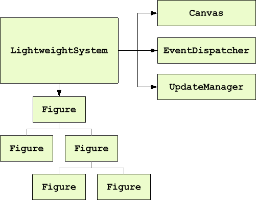

Draw2d is a lightweight toolkit of graphical components called figures. Lightweight means that a figure is simply a java object, with no corresponding resource in the operating system. Figures can be composed via a parent-child relationship. Every figure has a rectangular bounds inside which it, and its children, paint. A layout manager can be used to place children based on their index and/or constraint.
A LightweightSystem associates a figure composition with an SWT
Canvas. The lightweight system hooks listeners for most SWT events, and forwards
most of them to an EventDispatcher, which translates them into
events on the appropriate figure.
Paint events, however, are forwarded to the UpdateManager, which
coordinates painting and layout. Figures can be updated in ways which affect
their appearance or size, and the update manager ensures that only one layout
occurs, followed by a repaint of only the region which was updated.
Any type of diagram, document, or drawing can be easily constructed and efficiently updated by combining the provided figure and layout implementations along with the use of custom figures or layouts when needed.
Additional topics: